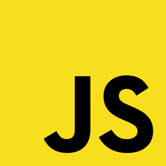

JavaScript
Hem kamu hem de özel sektörde kullanılan JavaScript, GitHub üzerinde de kullanılan en popüler
dildir.
Geliştiricilerin web siteleri üzerinde etkileşimli öğeler oluşturmasını sağlayarak en çok kullanılan yazılım
dillerinden biri olmasının yanı sıra, Nesnelerin interneti ve bazı oyun geliştirme alanlarında da kullanılır.
Herhangi bir projenin front-end, yani kullanıcının gördüğü ön kısım üzerinde çalışmak istiyorsanız
JavaScript
sizin için doğru programlama dili olacaktır.
Programlama Dilleri